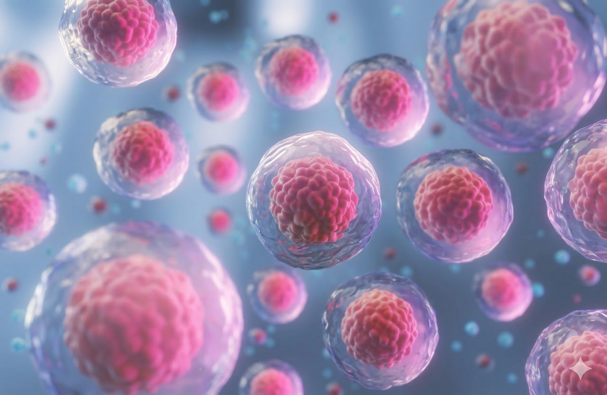

Breast cancer CTC paper summary: what the automated negative selection platform revealed
See why CSV+ CTCs stood out in this study and what the results suggest for metastatic-risk stratification and recurrence monitoring.
Browse Good Future’s CTC insights, from testing principles and enrichment methods to report interpretation.
5 published articles
See why CSV+ CTCs stood out in this study and what the results suggest for metastatic-risk stratification and recurrence monitoring.

Learn how CTCs enter the bloodstream and why CTC testing is being studied as an adjunct for cancer-risk assessment and follow-up.

Learn how red blood cell removal, white blood cell identification, and magnetic separation can enrich candidate CTCs without relying on a single tumor marker.

CTCs are biologically heterogeneous. Reviewing epithelial and mesenchymal markers together may provide a more complete view than relying on a single signal.

Follow the Good Future workflow from specimen collection and cell enrichment to immunofluorescence imaging and report delivery.